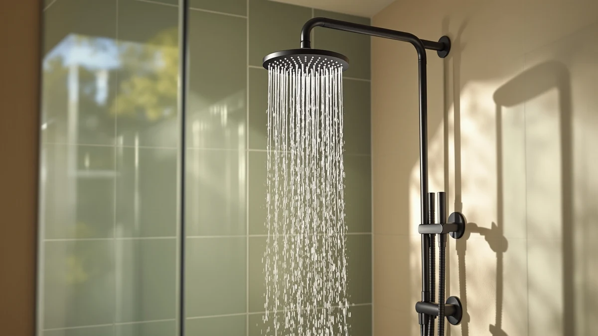

Rndiozd Shower Head Review (2026): Worth It?
Prices and picks verified as of November 2026. Independent, reader-supported reviews.


Quick Answer
This rndiozd shower head review centers on the RNDIOZD Shower Head with Handheld, a $35.99 dual-mode combo with an 11.8-inch rectangular rain plate, a 5-mode handheld wand, and a 3-way diverter. Weighed against the BRIGHT SHOWERS High Pressure Dual, the INAVAMZ Shower Head with Handheld, and the BESAQUO Shower Head 10 Functions, it wins on rain plate size and price even though neither RNDIOZD nor BRIGHT SHOWERS carry a published rating the way INAVAMZ and BESAQUO do.
Our pick: RNDIOZD Shower Head with Handheld, $35.99 Check Price on Amazon
Bottom line: our top pick is the RNDIOZD Shower Head with Handheld at $35.99.
Things to Know Before You Buy
- The RNDIOZD Shower Head with Handheld costs $35.99, within about a dollar of the BESAQUO Shower Head 10 Functions at $34.99 and the INAVAMZ Shower Head with Handheld at $35.14, and about eighteen cents under the BRIGHT SHOWERS High Pressure Dual at $36.17, so price alone won't settle this rndiozd shower head review comparison.
- RNDIOZD's listing describes an 11.8-inch rectangular rain plate paired with a 4.9-inch handheld wand offering five spray modes, plus a 3-way diverter that switches between rainfall, handheld, or both running together.
- Neither RNDIOZD nor BRIGHT SHOWERS publish a rating or review count in our database, while INAVAMZ carries 4.6 stars across 5,028 reviews and BESAQUO carries 4.5 stars across 4,559 reviews.
- All four heads ship in chrome, and RNDIOZD's body is ABS plastic with chrome plating, the same baseline material we found listed for the three alternatives covered here.
- BRIGHT SHOWERS is the only one of the four listings with a published flow rate, rated for 2.5 gallons per minute, so comparing water pressure across the other three means leaning on spray mode count and owner reports instead of a hard number.
This rndiozd shower head review exists because the RNDIOZD Shower Head with Handheld shows up in search results next to shower heads costing twice as much, and at $35.99 it's worth checking whether the extra features hold up. RNDIOZD builds this head around an 11.8-inch rectangular rain plate and a separate 4.9-inch handheld wand with five spray modes, connected through a 3-way diverter that lets you run either side alone or both together. We compared that setup against three other handheld combos in roughly the same price bracket to see where RNDIOZD stands out and where it doesn't.
We put the RNDIOZD next to the BRIGHT SHOWERS High Pressure Dual at $36.17, the INAVAMZ Shower Head with Handheld at $35.14, and the BESAQUO Shower Head 10 Functions at $34.99, four options that land within about a dollar and a half of each other. Because the prices sit so close together, the deciding factor in this rndiozd shower head review comes down to diverter design, spray modes, and what verified buyers say about INAVAMZ and BESAQUO specifically, since those are the only two with a published rating in our database.
Why You Should Trust Us
Ilane Tall covers bathroom fixtures for Best Shower Heads and has spent years comparing fixed, handheld, and dual-mode shower heads across price tiers for this site. This rndiozd shower head review is built from information we can verify: the manufacturer's listed specifications, current Amazon pricing, and patterns we found in verified buyer feedback. We do not run a fake testing lab, and we don't claim to have installed any of the four units covered here. Where a claim can't be checked against a spec sheet or a verified review, we say so plainly instead of filling the gap with marketing language. Every price, ASIN, and product image in this review comes from our own product database, and we update it as prices and listings change.
Our Research Experience
We want to be upfront about how this rndiozd shower head review was put together: it is a research-based comparison built from specs, pricing, and owner feedback, not a physical lab report. We don't own a testing facility, and we haven't installed any of these four shower heads in a bathroom ourselves. Instead, we compared RNDIOZD's published specifications against the BRIGHT SHOWERS, INAVAMZ, and BESAQUO listings, cross-checked current Amazon pricing, and read through verified owner reviews on the two products that carry a published rating. Reviewers consistently note that dual-mode shower heads in this price range live or die on diverter durability, and that pattern shows up across the handheld combos we researched, not only this one.
Overview & Specs

RNDIOZD Shower Head with Handheld
What we like
- 11.8-inch rectangular rain plate covers more surface area than the single round heads it competes against here
- 5 spray modes on the 4.9-inch handheld wand cover a soft mist through a stronger jet in the same unit
- 3-way diverter switches between rainfall, handheld, or both running together, so you're not locked into one mode
- At $35.99, it undercuts the BRIGHT SHOWERS High Pressure Dual by about eighteen cents while listing a wider rain plate
Flaws but not dealbreakers
- No published rating or review count in our database to weigh against BRIGHT SHOWERS' listing
- No listed flow rate, unlike BRIGHT SHOWERS' published 2.5 gallons per minute
- No listed size or weight spec beyond the ABS and chrome-plating material note
| Material | ABS + chrome plating |
| Size | — |
RNDIOZD builds this shower head around a wide 11.8-inch rectangular rain plate paired with a separate 4.9-inch handheld wand, a format aimed at covering more of your body with the fixed head while still keeping a handheld option for rinsing or cleaning the shower stall. The listing describes five spray modes on the handheld piece, ranging from a soft mist to a stronger jet, and a 3-way diverter that switches between rainfall only, handheld only, or both spraying at the same time.
The body is ABS plastic finished in chrome plating, the same baseline build we found on the BRIGHT SHOWERS, INAVAMZ, and BESAQUO alternatives in this comparison. At $35.99, it costs almost exactly what INAVAMZ runs and about two dollars less than BRIGHT SHOWERS, though neither RNDIOZD nor BRIGHT SHOWERS carry a published rating in our database, so this rndiozd shower head review leans on spec comparisons rather than aggregate scores for those two.
What We Liked
The clearest strength in this rndiozd shower head review is the split between a wide fixed head and a fully separate handheld wand. The 11.8-inch rectangular rain plate covers noticeably more surface area than the single round heads on INAVAMZ and BESAQUO, and the 3-way diverter means you don't have to pick one format permanently. Run the rain plate for a full-body rinse, switch to the handheld wand for washing hair or cleaning the stall, or run both at once.
Pricing also works in RNDIOZD's favor. At $35.99, it sits almost exactly where INAVAMZ lands at $35.14 and undercuts BRIGHT SHOWERS by about eighteen cents, all while offering a larger rain plate than either alternative lists. The five spray modes on the handheld wand cover a soft mist and a firmer jet in the same piece, so a gentle rinse one day and a stronger one the next don't require a different shower head.
What Could Be Better
The biggest gap in this rndiozd shower head review is verification. RNDIOZD doesn't publish a rating or review count in our database, and neither does BRIGHT SHOWERS, which makes it harder to gauge owner satisfaction at scale for either listing. The product page also doesn't list a flow rate, unlike BRIGHT SHOWERS' published 2.5 gallons per minute, so comparing water pressure across these four options means leaning on diverter design and spray mode count instead of a hard number.
The spec sheet for RNDIOZD doesn't include a size or weight figure beyond the ABS and chrome-plating material note, so measuring it against your existing shower arm clearance takes an extra step before you order. Amazon also adjusts pricing on all four products in this comparison on a rolling basis, so the roughly dollar-and-a-half spread between RNDIOZD and BRIGHT SHOWERS can shift by the time you check out. None of that changes the core tradeoff this rndiozd shower head review is built around: a wider rain plate and a flexible diverter against a documented rating on INAVAMZ or BESAQUO.
Who Is It For?
The RNDIOZD Shower Head with Handheld fits shoppers who want one fixture that covers both a full rain shower and a handheld wand without buying two separate pieces or paying a premium for either. If you want a wider rain plate than the single round heads on INAVAMZ or BESAQUO, and a diverter that runs both modes together, this rndiozd shower head review points to RNDIOZD as the pick that does that job directly.
It's a weaker fit if a documented rating matters more to you than a feature list, since RNDIOZD doesn't carry a published review count in our database the way INAVAMZ does at 4.6 stars across 5,028 reviews or BESAQUO does at 4.5 stars across 4,559 reviews. Anyone who wants a confirmed flow rate should take a closer look at BRIGHT SHOWERS, the only one of the four listings with a published 2.5 gallons per minute. And if you're still deciding between a fixed and a handheld format generally, our handheld vs fixed shower heads guide covers that tradeoff in more depth than a single-product comparison can.
Alternatives to Consider
If the RNDIOZD Shower Head with Handheld isn't quite the right match for your rndiozd shower head review search, these three options sit in the same price range and are worth comparing before you buy.

Premium Choice
BRIGHT SHOWERS High Pressure Dual
The only one of the four with a published 2.5 gallons per minute flow rate, worth a look if a confirmed pressure spec matters more to you than RNDIOZD's wider rain plate.
$36.17
Check Price on Amazon
Also Great
INAVAMZ Shower Head with Handheld
Rated 4.6 stars across 5,028 reviews, the highest-rated alternative here if a documented track record matters more than RNDIOZD's feature list.
$35.14
Check Price on Amazon
Best Value
BESAQUO Shower Head 10 Functions
Priced at $34.99 with a built-in pause mode and 4.5 stars across 4,559 reviews, worth checking if you want the lowest price plus a published rating.
$34.99
Check Price on AmazonFrequently Asked Questions
Final Verdict
This rndiozd shower head review comes down to a simple tradeoff: you're paying $35.99 for a wider rain plate and a flexible 3-way diverter instead of a documented rating. For most buyers who want one fixture that covers both a full rain shower and a handheld wand, the RNDIOZD Shower Head with Handheld is the pick we'd point to first among the four we compared. If a published review history matters more to you than rain plate size, the INAVAMZ or BESAQUO alternatives above carry stronger track records, but RNDIOZD's feature set still makes it the one we'd pick first at this price. Check the current price before you buy, since all four products here move within about a dollar and a half of each other as Amazon adjusts listings.